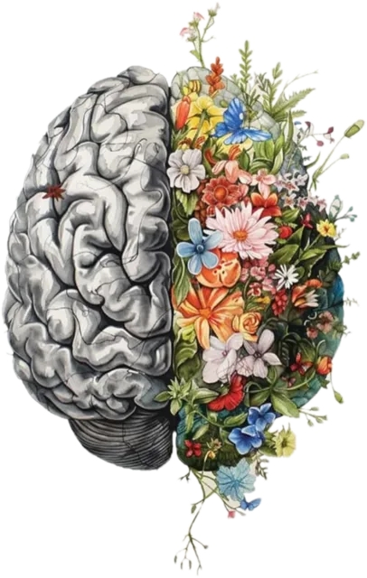

medicine
Medicine is more than diagnosis and treatment plans. It is listening closely, learning endlessly, and showing up for people in their most vulnerable moment.
organ plates

Heart
four chambers, one rhythm
love: [One honest sentence about why the heart pulls you in.]
learned: Infective endocarditis, taught as a tutorial in Medicine 1, and antiplatelet therapy in chronic coronary syndrome through a ticagrelor vs clopidogrel study in progress.
met: Cardiology rotation at Meniet El-Nasr Central Hospital (October 2026): ECG, echo, central line, emergency defibrillation. ESC Council on Cardiovascular Genomics.

Lungs
the tree that breathes
love: [One honest sentence about the lungs.]
learned: A case of COPD exacerbation with underlying myxedema coma, presented as a Semester 4 grand round.
met: Chest teaching within Internal Medicine, Basic Life Support (NHCPS, 2023), open chest drain insertion on the Incision Academy course.

Brain
where the questions start
love: [One honest sentence about the brain.]
learned: Pediatric brain tumors (tutorial), peripheral neuropathy (The Hidden Pain), and how little the public knows about multiple sclerosis.
met: Semester 5 grand round, a risk assessment reaching 100+ students from 10 Egyptian universities, MS awareness study across Egypt, Jordan and Libya.

Kidneys
quiet, constant work
love: [One honest sentence about the kidneys.]
learned: Chronic kidney injury, told through a grand round with a patient and doctor role play, and how blood pressure, heart and kidneys feed into each other.
met: Semester 5 grand round (considered one of the best in the round). Hypertension and cardio-renal-metabolic workshop, Novartis Egypt, 2025.

Endocrine
small glands, big effects
love: [One honest sentence about hormones.]
learned: Posterior pituitary disorders, taught as a tutorial in Medicine 2.
met: PASID congress (Pan Arab Society for Interventional Endocrinology and Diabetes Technology, 2025).

Blood
the river that carries it all
love: [One honest sentence about hematology.]
learned: Recent innovations in Hodgkin lymphoma diagnosis, presented as a poster at the university hematology conference (12 June 2023).
met: Hematology within Internal Medicine and Pediatrics (hematology and BM transplant).

Reproductive
where autonomy and care meet
love: [One honest sentence about women’s health.]
learned: Ovarian cancer, taught as a tutorial in Gynaecology, and why informed choice in childbirth matters.
met: Gynaecology and Obstetrics rotation (May to June 2026), the C-section reduction project, Novartis female health workshop.
teaching
Five tutorials I prepared and taught as slide decks, each part of a course.
Venous thromboembolism prophylaxis
Surgery 1 · general surgery
Infective endocarditis
Medicine 1 · cardiology
Pediatric brain tumors
Pediatrics 1 · pediatric neurology
Understanding ovarian cancer
Gynaecology · gynaecological oncology
Posterior pituitary disorders
Medicine 2 · endocrinology
built
Caprini risk score assessment
online tool
A tool I developed for venous thromboembolism prophylaxis. It gives a Caprini score and the degree of prophylaxis recommended.
grand rounds & posters
Infection in immunosuppressed patients
Semester 2
Grand round.
Exacerbation of COPD with underlying myxedema coma
Semester 4
Grand round, case report.
The Hidden Pain: peripheral neuropathy
Semester 5
Grand round, plus a risk assessment for peripheral neuropathy based on the daily habits of medical students. It reached 100+ participants from 10 universities in Egypt.
Peeing Less, Worrying More: chronic kidney injury
Semester 5
Grand round with a patient and doctor role play. Considered one of the best in the round.
Recent innovations in Hodgkin lymphoma diagnosis
June 2023
Poster presentation at the university hematology conference (12 June 2023).
research
Awareness and knowledge of multiple sclerosis in the general population in Egypt, Jordan and Libya
In progress
Study design, questionnaire development, literature review.
Ticagrelor vs clopidogrel in clopidogrel-naive patients with chronic coronary syndrome
In progress
Literature review, study framework, manuscript preparation.
where my mind goes
Surgery · Women’s health · Neurology · Public health · Dermatology and endocrine